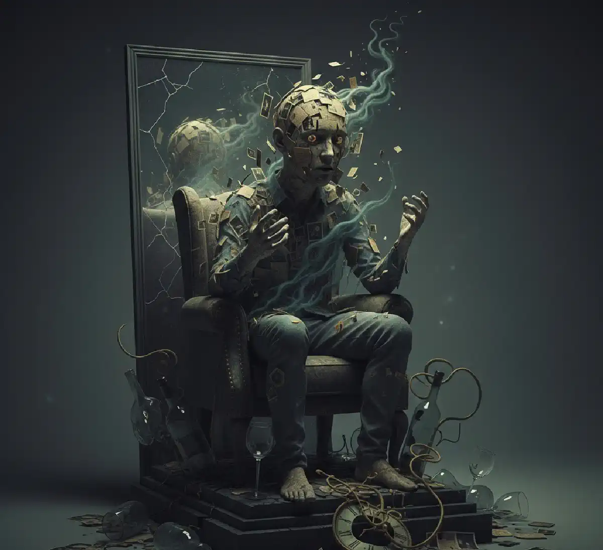

+38(068) 79 72 782
+38(068) 79 72 782Алкогольная амнезия
Провалы в памяти после алкоголя — признак поражения мозга


Бесплатная консультация, работаем круглосуточно 24/7
Провалы в памяти после алкоголя — признак поражения мозга
Алкогольная амнезия — это патологическое состояние, при котором человек частично или полностью утрачивает способность воспроизводить воспоминания о событиях, произошедших в период алкогольного опьянения. С точки зрения медицины данное явление рассматривается как прямое следствие токсического воздействия этанола и продуктов его распада на центральную нервную систему, прежде всего на структуры головного мозга, отвечающие за процессы запоминания, хранения и воспроизведения информации. При этом важно подчеркнуть, что алкогольная амнезия не связана с потерей сознания: человек может активно взаимодействовать с окружающими, разговаривать, передвигаться, принимать решения и совершать различные действия, однако мозг в этот момент не фиксирует происходящее в долговременной памяти.
Провалы в памяти после алкоголя могут возникать не только у людей с хронической алкогольной зависимостью, но и у тех, кто употребляет спиртное эпизодически. Особенно высок риск амнезии при употреблении больших доз алкоголя за короткий промежуток времени, быстром темпе питья, приёме спиртного натощак или смешивании различных алкогольных напитков. В таких условиях концентрация этанола в крови резко возрастает, что приводит к угнетению работы нейронов и нарушению передачи нервных импульсов. В результате мозг временно теряет способность формировать устойчивые воспоминания, и события периода опьянения «выпадают» из памяти полностью или частично.
Алкогольная амнезия является тревожным сигналом, указывающим на перегрузку нервной системы и высокий уровень интоксикации организма. Повторяющиеся эпизоды провалов в памяти свидетельствуют о том, что защитные механизмы мозга истощаются, а токсическое воздействие алкоголя приобретает системный характер. Именно поэтому данное состояние требует серьёзного отношения и не должно восприниматься как безобидная особенность или временный эффект опьянения.
Алкогольная амнезия — это патологическое состояние, при котором нарушаются ключевые когнитивные процессы: запоминание, хранение и последующее воспроизведение информации. Данное нарушение развивается на фоне алкогольной интоксикации и связано с прямым токсическим воздействием этанола на центральную нервную систему. Принципиально важно понимать, что при алкогольной амнезии человек, как правило, не теряет сознание и внешне может выглядеть относительно адекватным. Он способен поддерживать разговор, ориентироваться в знакомой обстановке, принимать решения, передвигаться, вступать в споры или конфликты, пользоваться телефоном и даже выполнять сложные последовательные действия. Однако при всём этом мозг перестаёт полноценно фиксировать происходящее, из-за чего события данного периода не сохраняются в памяти.
Особенность алкогольной амнезии заключается в том, что человек действует «в моменте», используя кратковременную память, но механизм формирования долговременных воспоминаний оказывается заблокированным. Именно поэтому на следующий день или спустя несколько часов воспоминания о происходившем либо полностью отсутствуют, либо представлены отдельными фрагментами без логической связи. Это создаёт ложное ощущение, что человек «просто не помнит», хотя на самом деле информация не была сохранена на физиологическом уровне. С медицинской точки зрения алкогольная амнезия напрямую связана с нарушением работы гиппокампа — важнейшей структуры головного мозга, отвечающей за формирование памяти, обучение, пространственную ориентацию и временную последовательность событий. Под воздействием этанола и продуктов его распада нейроны гиппокампа теряют способность эффективно передавать сигналы между собой. В результате процесс консолидации памяти — переход информации из кратковременной формы в долговременную — временно прекращается. По сути, гиппокамп на период интоксикации частично «выключается», что делает невозможным сохранение новых воспоминаний.
Дополнительно алкоголь нарушает баланс нейромедиаторов, снижает уровень кислорода, поступающего к клеткам мозга, и угнетает энергетические процессы в нейронах. Всё это усиливает негативное воздействие на структуры, ответственные за память, и повышает риск возникновения амнезии даже при отсутствии хронической зависимости. Продолжительность алкогольной амнезии может значительно варьироваться. В лёгких случаях она охватывает лишь отдельные эпизоды и длится несколько минут, в более выраженных — продолжается несколько часов. При тяжёлой интоксикации провалы в памяти могут распространяться на весь период опьянения — от первых рюмок до момента пробуждения. При этом восстановить утраченные воспоминания невозможно, поскольку они физически не были записаны мозгом. Ни напоминания окружающих, ни попытки «вспомнить», ни специальные психологические методы не позволяют вернуть информацию, которая не прошла этап формирования долговременной памяти.
Этанол оказывает многоуровневое и системное токсическое воздействие на нервную систему, затрагивая как биохимические, так и структурные процессы в головном мозге. Попадая в кровь, алкоголь быстро преодолевает гематоэнцефалический барьер и начинает влиять на работу нейронов, нарушая тонкий баланс нейромедиаторов. Он подавляет активность возбуждающих медиаторных систем и одновременно усиливает тормозные процессы в центральной нервной системе. В результате этого нарушается нормальная передача нервных импульсов, снижается скорость обработки информации и утрачивается способность формировать устойчивые нейронные связи, которые лежат в основе процессов обучения и запоминания. На фоне алкогольной интоксикации мозг фактически переходит в «экономный режим» работы, при котором приоритет отдается поддержанию жизненно важных функций, а когнитивные процессы, включая формирование памяти, угнетаются. Это объясняет, почему человек может выглядеть активным и вовлечённым в происходящее, но при этом не запоминать события и разговоры, происходящие в состоянии опьянения. Кроме того, алкоголь запускает целый ряд патологических механизмов, которые напрямую способствуют развитию алкогольной амнезии. В частности, этанол:
Особенно высокий риск алкогольной амнезии наблюдается в ситуациях, когда концентрация алкоголя в крови повышается резко и в короткий промежуток времени. Именно внезапный скачок уровня этанола чаще всего становится причиной так называемых «блэкаутов» — полной утраты воспоминаний о периоде опьянения. Такие эпизоды могут возникать даже у людей без признаков хронического алкоголизма и нередко становятся для них неожиданностью. Чем быстрее человек употребляет алкоголь, тем стремительнее возрастает его концентрация в крови и тем сильнее токсическое воздействие на структуры мозга, отвечающие за память. Это делает быстрый темп питья, употребление крепких напитков и отсутствие пауз между дозами одним из ключевых факторов развития алкогольной амнезии и связанных с ней когнитивных нарушений.
Алкогольная амнезия может проявляться в нескольких клинических формах, каждая из которых имеет свои характерные особенности, степень выраженности и важное диагностическое значение для оценки состояния пациента. Различия между формами амнезии позволяют врачу понять, насколько выражено токсическое воздействие алкоголя на головной мозг, а также на каком этапе находится нарушение когнитивных функций и риск формирования зависимости.
Риск возникновения алкогольной амнезии определяется не только общим количеством выпитого алкоголя, но и целым комплексом индивидуальных и ситуационных факторов. Даже относительно одинаковые дозы спиртного могут по-разному влиять на людей в зависимости от особенностей обмена веществ, состояния здоровья и условий употребления. Одним из ключевых и наиболее опасных факторов является скорость употребления алкоголя. Чем быстрее этанол поступает в кровь, тем стремительнее повышается его концентрация и тем выше вероятность резкого угнетения работы структур мозга, отвечающих за формирование памяти. Именно быстрый темп питья чаще всего становится причиной внезапных провалов в памяти, даже у людей без признаков хронической зависимости.
Существенную роль играют и характеристики самого алкоголя. Употребление крепких спиртных напитков значительно увеличивает токсическую нагрузку на центральную нервную систему, особенно если они принимаются без перерывов и в больших дозах. Дополнительный риск создаёт смешивание алкоголя разной крепости, поскольку в таких условиях сложнее контролировать количество этанола, поступающего в организм, а его концентрация в крови может расти скачкообразно. Отсутствие еды перед приёмом алкоголя также усиливает негативный эффект, так как этанол всасывается быстрее и достигает мозга в более высокой концентрации.
Большое значение имеют и хронические заболевания, особенно патологии печени и нервной системы. При нарушении функции печени замедляется выведение алкоголя и продуктов его распада, что приводит к более длительной и выраженной интоксикации. Заболевания центральной нервной системы снижают устойчивость нейронов к токсическому воздействию, делая амнезию более вероятной даже при умеренном употреблении спиртного. Гормональные особенности организма также играют роль: у женщин алкогольная амнезия развивается быстрее и при меньших дозах, что связано с отличиями в метаболизме этанола и составе тела.
Психоэмоциональное состояние человека оказывает дополнительное влияние на риск провалов в памяти. Хронический стресс, переутомление, депрессивные состояния и недосып истощают нервную систему и снижают её способность противостоять токсическому воздействию алкоголя. В таких условиях даже привычные дозы спиртного могут вызывать выраженные когнитивные нарушения. Особую опасность представляет одновременный приём алкоголя с антидепрессантами, транквилизаторами или снотворными препаратами, так как они усиливают угнетающее действие этанола на мозг и резко повышают риск амнезии и тяжёлых осложнений. Наличие сразу нескольких факторов риска одновременно значительно увеличивает вероятность не только алкогольной амнезии, но и развития серьёзных последствий алкогольной интоксикации. В таких ситуациях провалы в памяти становятся не случайным эпизодом, а закономерным признаком перегрузки и повреждения центральной нервной системы.
Алкогольная амнезия представляет серьёзную и многогранную угрозу как для физического, так и для психического здоровья человека. В периоды провалов памяти резко снижается или полностью утрачивается критическое мышление, способность адекватно оценивать ситуацию и прогнозировать последствия собственных действий. Человек может переоценивать свои возможности, игнорировать опасность и принимать импульсивные решения, не осознавая реальный риск. Именно в такие моменты значительно возрастает вероятность травм, бытовых и производственных несчастных случаев, дорожно-транспортных происшествий, падений с высоты, переохлаждений и других опасных для жизни ситуаций. Дополнительную угрозу представляют противоправные поступки, за которые человек впоследствии может нести юридическую ответственность, несмотря на отсутствие воспоминаний о содеянном.
Регулярно повторяющиеся эпизоды алкогольной амнезии являются важным клиническим признаком хронического поражения головного мозга. Они указывают на то, что нейроны систематически подвергаются токсическому воздействию этанола и продуктов его распада, а восстановительные механизмы нервной системы постепенно истощаются. Со временем это может привести к стойким когнитивным нарушениям, которые сохраняются даже в периоды трезвости и прогрессируют при продолжении употребления алкоголя. К наиболее распространённым последствиям относятся:
Особую опасность представляет сочетание алкогольной амнезии с агрессивным или импульсивным поведением. В таких состояниях человек может проявлять вербальную или физическую агрессию, совершать рискованные или насильственные действия, не осознавая происходящее и не контролируя себя. После выхода из опьянения отсутствие воспоминаний о собственных поступках нередко усиливает чувство тревоги, вины или отрицания проблемы, что затрудняет обращение за помощью и способствует дальнейшему усугублению ситуации.
Алкогольная амнезия имеет прямую и тесную связь с развитием алкогольной зависимости и в клинической практике рассматривается как один из важных маркеров прогрессирования заболевания. На начальных этапах употребления спиртного провалы в памяти могут возникать эпизодически и чаще всего связаны с перееданием дозы или быстрым темпом питья. Однако по мере формирования алкоголизма амнезии становятся всё более частыми, продолжительными и могут возникать даже при меньшем количестве выпитого алкоголя, чем ранее. Это свидетельствует о том, что центральная нервная система утрачивает способность компенсировать токсическое воздействие этанола, а повреждение нейронных структур приобретает устойчивый характер. Появление алкогольной амнезии имеет важное диагностическое значение, поскольку указывает на ряд глубинных изменений в поведении и физиологии человека. В частности, регулярные провалы в памяти:
На этом этапе многие пациенты склонны воспринимать амнезию как индивидуальную реакцию на алкоголь или временное неудобство, не требующее вмешательства. Нередко звучат оправдания в духе «просто не помню», «перебрал случайно» или «у всех так бывает». Однако в наркологии подобное состояние рассматривается как объективный и клинически значимый критерий тяжести алкогольного поражения головного мозга. Повторяющиеся провалы в памяти указывают на формирование зависимости и служат серьёзным поводом для начала комплексного лечения, направленного не только на отказ от алкоголя, но и на восстановление когнитивных функций и предотвращение дальнейшего прогрессирования заболевания.
Утраченные во время алкогольной амнезии воспоминания в большинстве случаев восстановлению не подлежат. Это объясняется тем, что в период выраженной алкогольной интоксикации информация попросту не была сохранена в долговременной памяти. Процесс запоминания был нарушен на этапе формирования воспоминаний, поэтому возвращать фактически нечего. Ни психотерапевтические методики, ни гипноз, ни медикаментозное лечение не способны восстановить события, которые не были зафиксированы нейронными структурами головного мозга. Даже при наличии фрагментарных воспоминаний и рассказов окружающих мозг не «достраивает» утерянные эпизоды, а лишь формирует предположительные образы, не являющиеся истинной памятью.
Тем не менее отсутствие возможности вернуть утраченные воспоминания не означает, что последствия алкогольной амнезии являются необратимыми в целом. При своевременном прекращении употребления алкоголя и правильно подобранной терапии возможно восстановление функционального состояния мозга и стабилизация когнитивных процессов. Комплексное лечение направлено на снижение токсического воздействия этанола, улучшение кровоснабжения головного мозга и поддержку нейронных связей, что позволяет значительно улучшить работу памяти в будущем. Чем раньше человек обращается за медицинской помощью и начинает лечение, тем выше вероятность сохранения когнитивных функций и предотвращения стойких нарушений памяти. Ранняя терапия позволяет не только остановить прогрессирование повреждений мозга, но и значительно повысить качество жизни, восстановив способность к полноценной умственной и социальной активности.
Лечение алкогольной амнезии всегда носит комплексный характер и направлено не только на устранение отдельных симптомов, но прежде всего на основную причину их возникновения — алкогольную интоксикацию или сформированную зависимость. В наркологической практике невозможно эффективно лечить нарушения памяти без одновременного воздействия на источник токсического поражения мозга. Именно поэтому терапия начинается с оценки общего состояния пациента, степени интоксикации, наличия сопутствующих заболеваний и длительности употребления алкоголя.
Основу лечения составляет медицинская детоксикация, целью которой является выведение этанола и продуктов его распада из организма, восстановление водно-электролитного баланса и нормализация обменных процессов. Детоксикация позволяет снизить нагрузку на центральную нервную систему, улучшить кровоснабжение мозга и создать условия для восстановления нейронных связей. В зависимости от состояния пациента она может проводиться как в условиях клиники, так и на дому под контролем врача.
Не менее важную роль играет профилактика алкогольной амнезии. Она включает полный отказ от алкоголя либо строгий контроль его употребления, регулярные медицинские осмотры и наблюдение у специалиста, а также своевременное обращение за помощью при первых признаках провалов в памяти. Раннее вмешательство позволяет предотвратить прогрессирование нарушений, сохранить когнитивные функции и избежать развития тяжёлых осложнений, связанных с хроническим поражением головного мозга.
Консультация врача-нарколога необходима при любых повторяющихся провалах в памяти после употребления алкоголя, независимо от их длительности и субъективной «выраженности». Даже кратковременные эпизоды амнезии являются клинически значимым симптомом и указывают на токсическое воздействие этанола на центральную нервную систему. Особое внимание следует уделять ситуациям, когда провалы в памяти сопровождаются изменением привычного поведения, утратой самоконтроля, эмоциональной нестабильностью, вспышками раздражительности или агрессии, а также ухудшением социальной адаптации — конфликтами в семье, снижением работоспособности, проблемами в профессиональной или общественной сфере.
Обращение к специалисту позволяет провести комплексную оценку состояния пациента, определить степень поражения нервной системы и выявить наличие или риск формирования алкогольной зависимости. На ранних этапах многие изменения носят обратимый характер, однако при отсутствии медицинской помощи они имеют тенденцию к прогрессированию и закреплению. Именно поэтому своевременная консультация врача играет ключевую роль в профилактике тяжёлых последствий. Чем раньше человек обращается к врачу-наркологу при появлении провалов в памяти после алкоголя, тем выше вероятность восстановления нормальной работы нервной системы и сохранения качества жизни.
Алкогольная амнезия — это серьёзный и клинически значимый медицинский симптом, который прямо указывает на токсическое воздействие алкоголя и продуктов его распада на головной мозг и центральную нервную систему в целом. Провалы в памяти после употребления спиртного не являются вариантом нормы и не могут рассматриваться как безобидная особенность или «индивидуальная реакция» организма. Напротив, они свидетельствуют о нарушении работы нейронных механизмов памяти, угнетении функций гиппокампа и перегрузке компенсаторных возможностей мозга.
Игнорирование эпизодов алкогольной амнезии со временем приводит к усугублению когнитивных нарушений, повышает риск формирования алкогольной зависимости и способствует развитию тяжёлых неврологических и психических осложнений. Чем чаще возникают провалы в памяти, тем выше вероятность того, что токсическое поражение мозга приобретает хронический характер и начинает влиять не только на периоды опьянения, но и на повседневную жизнь человека.
Телефон для консультации: +38(050-021-69-57)
Да, мы строго соблюдаем полную конфиденциальность на всех этапах лечения. Информация о пациенте, диагнозе и прохождении терапии не передаётся третьим лицам. Обращение к нам не влечёт постановку на учёт. Вы можете быть уверены в безопасности и анонимности.
Программа лечения разрабатывается индивидуально после консультации со специалистом. Учитываются вид зависимости, её длительность, физическое и психологическое состояние пациента. Такой подход позволяет повысить эффективность терапии и снизить риск срыва. Мы не используем шаблонные решения.
Да, мы сопровождаем пациентов и после основного курса лечения. Проводятся консультации, рекомендации по адаптации и профилактике рецидивов. При необходимости возможна дальнейшая психологическая поддержка. Это помогает сохранить результат и вернуться к полноценной жизни.
Номер телефона:
+380 (68) 797 27 82
+380 (50) 021 69 57
Адрес наркологического центра вашего города уточняйте по
телефону
Работаем в: Киеве, Одессе, Львове, Харькове, Днепре,
Запорожье, Черкассах, Чугуеве, Черноморске, Каменском
Telegram: t.me/umbrellaplus
График работы: Круглосуточно